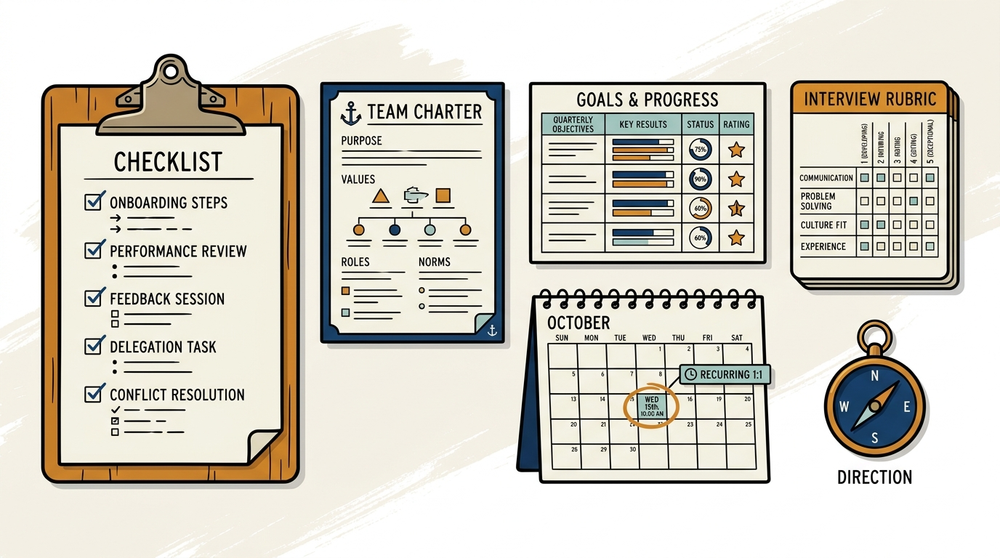

Image generated by Google Gemini (gemini-3-pro-image-preview)
Grounded People Management Tools
Željko Obrenović's people-management toolkit — the concrete tools I run people management with: checklists, templates, rubrics, and process guides for the management basics, the operating cadence, hiring, team development, and performance. Informed by practice and by the companion workbooks to Claire Hughes Johnson's "Scaling People".
No posts match your search.